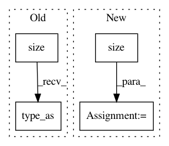

56f8b2d19f90807ce7e5801b780a8d4a6da96541,layers/tacotron.py,Decoder,forward,#Decoder#Any#Any#Any#,239
Before Change
// combine prev. model output and prev. real target
memory_input = torch.div(outputs[-1] + memory[t-1], 2.0)
// add a random noise
memory_input += torch.autograd.Variable(
torch.randn(memory_input.size())).type_as(memory_input)
// Prenet
processed_memory = self.prenet(memory_input)
After Change
training=True)
// add a random noise
noise = torch.autograd.Variable(
memory_input.data.new(ins.size()).normal_(0.0, 1.0))
memory_input = memory_input + noise
// Prenet
processed_memory = self.prenet(memory_input)
In pattern: SUPERPATTERN
Frequency: 4
Non-data size: 4
Instances
Project Name: mozilla/TTS
Commit Name: 56f8b2d19f90807ce7e5801b780a8d4a6da96541
Time: 2018-02-26
Author: egolge@mozilla.com
File Name: layers/tacotron.py
Class Name: Decoder
Method Name: forward
Project Name: cornellius-gp/gpytorch
Commit Name: 569bfbb5af6f9b0355f3ec0058e3f57495e60953
Time: 2018-01-10
Author: gpleiss@gmail.com
File Name: gpytorch/functions/add_diag.py
Class Name: AddDiag
Method Name: forward
Project Name: rusty1s/pytorch_geometric
Commit Name: d7bd8bca1dd54a8255afffb462b84c8b9c3b7eca
Time: 2017-10-25
Author: matthias.fey@tu-dortmund.de
File Name: torch_geometric/nn/functional/spline_gcn/edgewise_spline_weighting_cpu.py
Class Name: _EdgewiseSplineGcn
Method Name: backward
Project Name: pytorch/audio
Commit Name: 0e0d1e590e8cdae50d04a96617ea6601446f99fb
Time: 2018-12-25
Author: david@da3.net
File Name: torchaudio/transforms.py
Class Name: PadTrim
Method Name: __call__